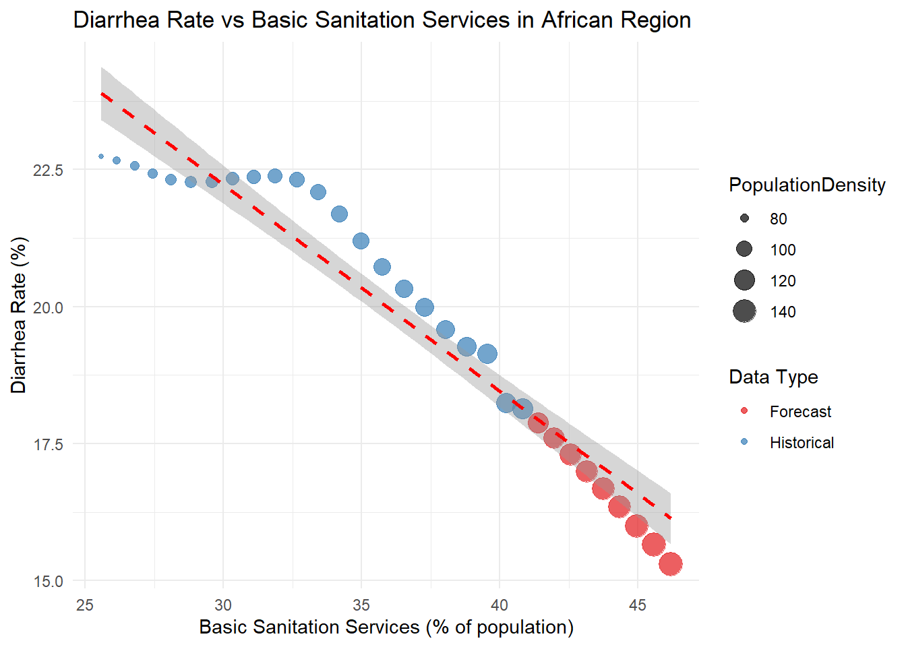
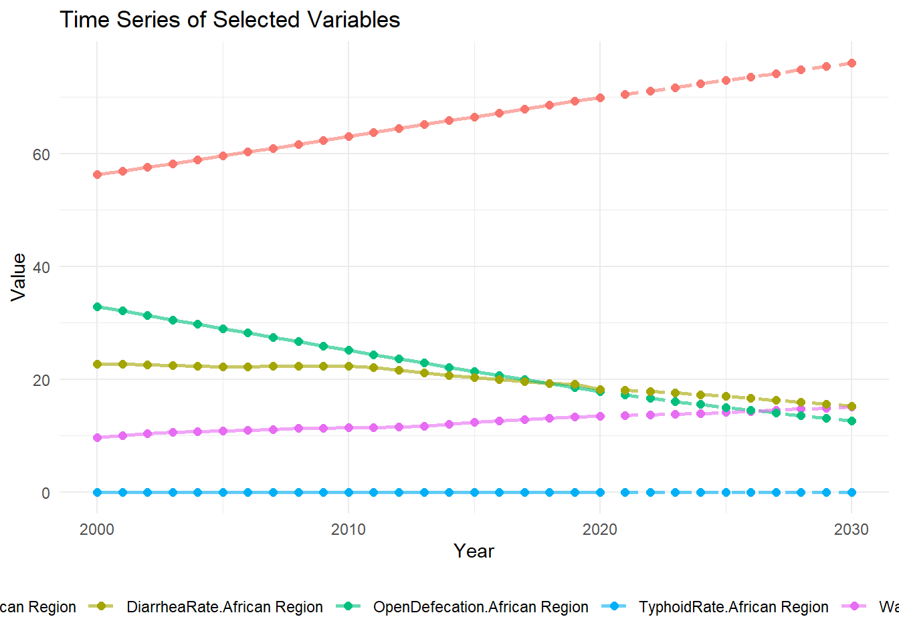
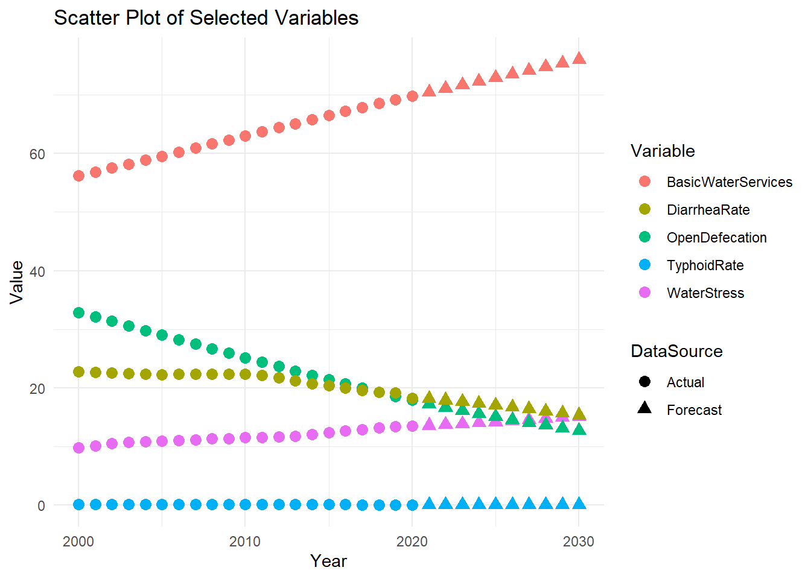
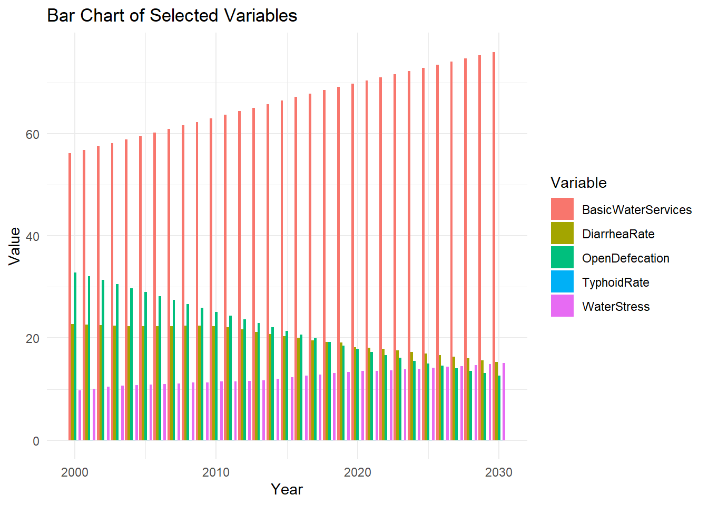
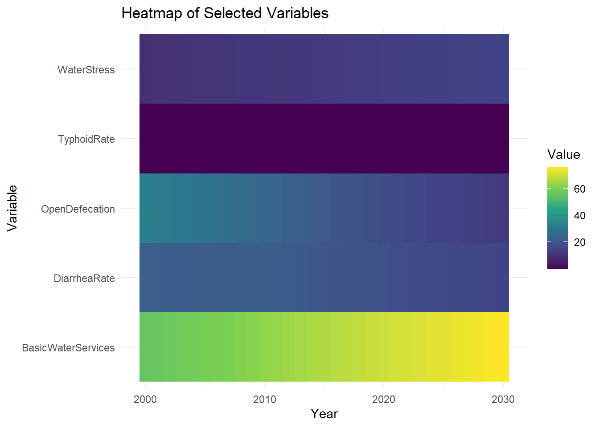
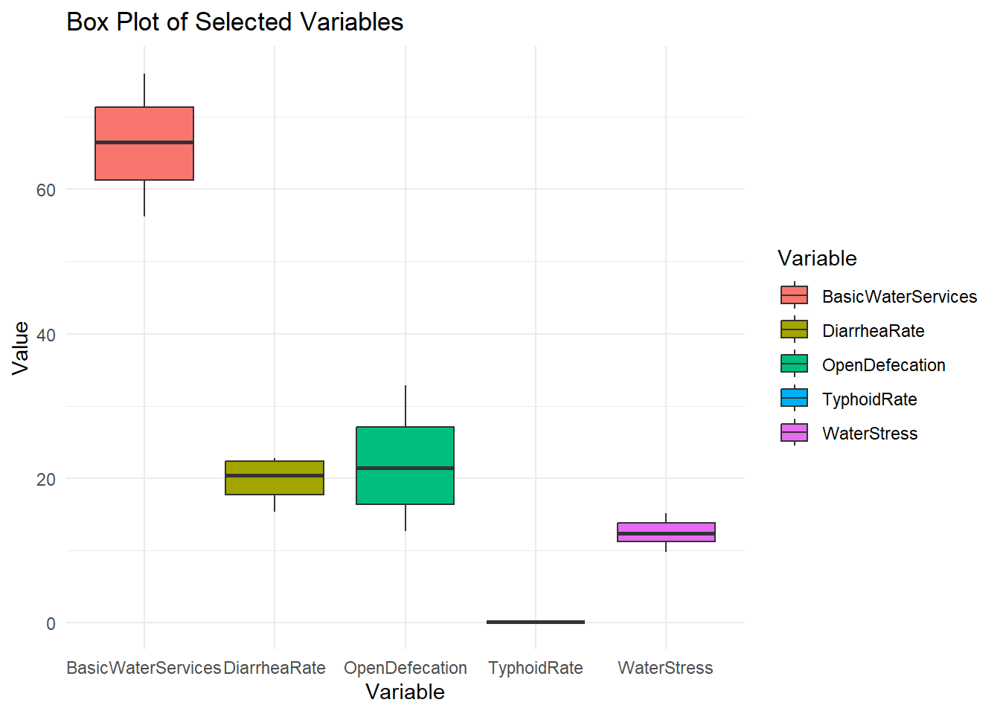
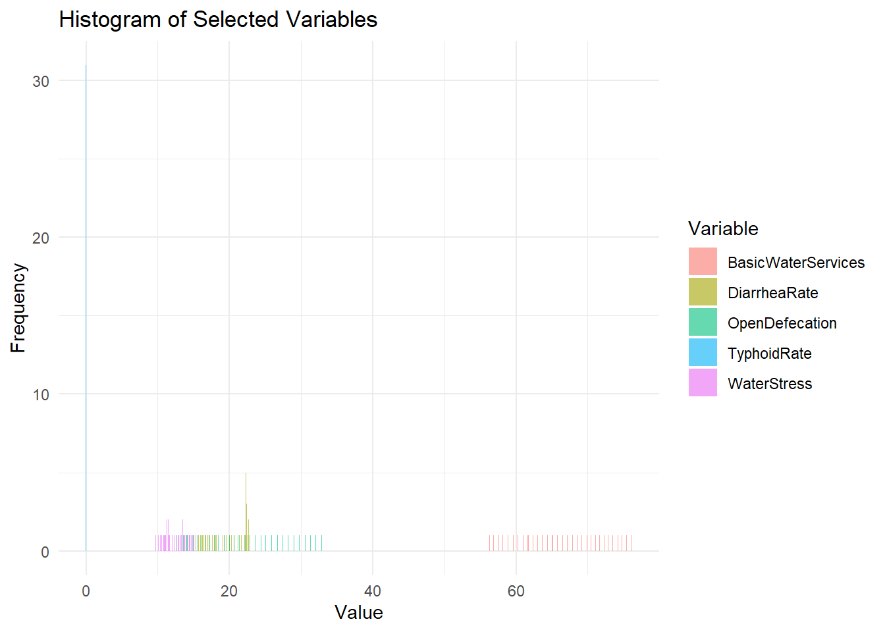
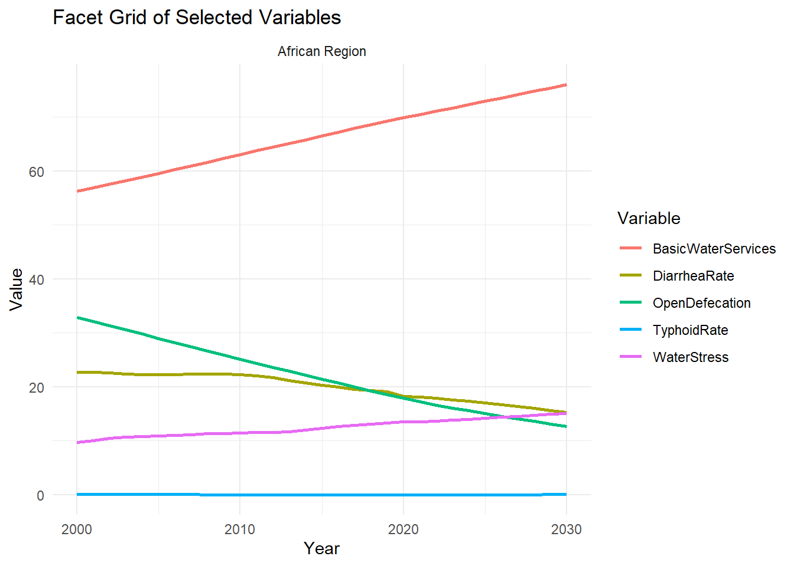
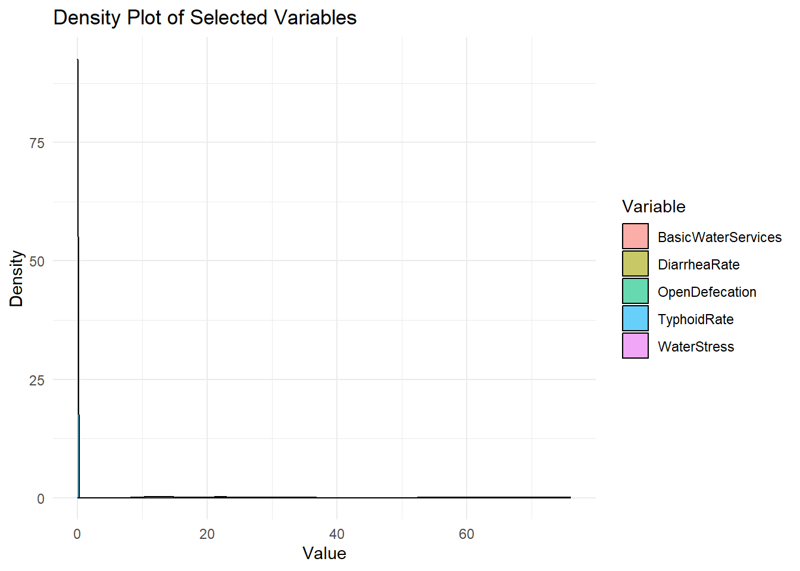

pacman::p_load(tidyverse, ggplot2, plm,ExPanDaR,lubridate, ggthemes, plotly,purrr,shiny)Take-home Exercise 3 Part 2
1.Overview
This part focus on creating visualization for the combined_complete_data.csv.
2.Data Preparation
2.1 Install and launch R packages
The project uses p_load() of pacman package to check if the R package are installed in the computer.
The following code chunk is used to install and launch the R packages.
2.2 Import Data
The below code chunk use read_csv() to read the csv file into R as a data frame
data <- read_csv("combined_complete_data.csv")3.Plotting Scatter Plot for Africa Region
The below code chunk plot a scatter for Africa between BasicSanitationService and DiarrheaRate
africa_data <- data %>%
filter(Region == "African Region")
africa_scatter <- ggplot(africa_data,
aes(x = BasicSanitationServices,
y = DiarrheaRate,
color = DataType)) +
geom_point(aes(size = PopulationDensity),
alpha = 0.7) +
geom_smooth(method = "lm",
se = TRUE,
color = "red",
linetype = "dashed") +
labs(
title = "Diarrhea Rate vs Basic Sanitation Services in African Region",
x = "Basic Sanitation Services (% of population)",
y = "Diarrhea Rate (%)",
color = "Data Type"
) +
theme_minimal() +
scale_color_brewer(palette = "Set1")
print(africa_scatter)
regression_model <- lm(DiarrheaRate ~ BasicSanitationServices, data = africa_data)
print("Regression Summary:")[1] "Regression Summary:"summary(regression_model)
Call:
lm(formula = DiarrheaRate ~ BasicSanitationServices, data = africa_data)
Residuals:
Min 1Q Median 3Q Max
-1.1528 -0.5384 -0.1055 0.5280 1.1540
Coefficients:
Estimate Std. Error t value Pr(>|t|)
(Intercept) 33.52665 0.70521 47.54 <2e-16 ***
BasicSanitationServices -0.37663 0.01919 -19.62 <2e-16 ***
---
Signif. codes: 0 '***' 0.001 '**' 0.01 '*' 0.05 '.' 0.1 ' ' 1
Residual standard error: 0.6769 on 29 degrees of freedom
Multiple R-squared: 0.93, Adjusted R-squared: 0.9275
F-statistic: 385 on 1 and 29 DF, p-value: < 2.2e-16print("Correlation Details:")[1] "Correlation Details:"cor_results <- cor.test(africa_data$BasicSanitationServices,
africa_data$DiarrheaRate)
print(cor_results)
Pearson's product-moment correlation
data: africa_data$BasicSanitationServices and africa_data$DiarrheaRate
t = -19.621, df = 29, p-value < 2.2e-16
alternative hypothesis: true correlation is not equal to 0
95 percent confidence interval:
-0.9828397 -0.9266356
sample estimates:
cor
-0.9643403 4 Use ExPanD to assist in determine the visualisation for shiny
4.1 Overview of the ExPanD package
The ExPanDaR package is designed for exploratory panel data analysis in R. It provides a set of tools that allow users to conduct various analyses on panel data, which involves data collected across time and across different subjects (such as countries, individuals, etc.).
The package aims to simplify and streamline tasks like:
Data exploration: Summarizing panel data, understanding the structure, and generating basic descriptive statistics.
Visualization: Creating plots and charts to visualize trends, distributions, and relationships in panel data.
Modeling: Performing regression analyses on panel data, including fixed-effects and random-effects models.
Diagnostics: Conducting diagnostic checks to assess the assumptions of panel data models.
4.2 Using ExPanD()
The below code chunk use the ExpanD() function, and set cs_id="Region", the ts_id="Year". The cs_id refers to the cross-sectional identifier (the entity being observed across time). In this case, it’s set to “Region”, indicating that each region represents an individual subject (or entity) observed over multiple time periods.The ts_id refers to the time-series identifier, specifying that the “Year” column contains the time periods in which the data was collected.
#remove the '#' for the line below for using ExPanD
#ExPanD(df = data, cs_id = "Region", ts_id = "Year")After review the output, it was decide to proceed with time trend and bar chart with multiple selection for variables.
5. Testing plots for visualization
5.1 plot with ggplot2
data$Year <- as.numeric(data$Year)
data$DataSource <- ifelse(data$Year > 2020, "Forecast", "Actual")
filtered_data <- function(variableType, washVarsSelect, diseaseSelect, regionSelect, dataSourceSelect, yearSelect) {
data_filtered <- data
data_filtered <- data_filtered %>%
filter(Year >= yearSelect[1] & Year <= yearSelect[2]) %>%
filter(Region %in% regionSelect)
data_filtered <- data_filtered %>%
filter(DataSource %in% dataSourceSelect)
selected_vars <- if (variableType == "WASH Variables") {
washVarsSelect
} else if (variableType == "Disease Rates") {
diseaseSelect
} else { # Compare Both
c(washVarsSelect, diseaseSelect)
}
plot_data <- data_filtered %>%
select(Region, Year, DataSource, all_of(selected_vars)) %>%
pivot_longer(
cols = all_of(selected_vars),
names_to = "Variable",
values_to = "Value"
)
return(plot_data)
}#line plot
line_plot <- function(plot_data) {
ggplot(plot_data, aes(x = Year, y = Value, color = Variable)) +
geom_line(size = 1) +
labs(title = "Line Plot of Selected Variables", x = "Year", y = "Value") +
theme_minimal() +
theme(legend.position = "bottom")
}#box plot
box_plot <- function(plot_data) {
ggplot(plot_data, aes(x = Variable, y = Value, fill = Variable)) +
geom_boxplot() +
labs(title = "Box Plot of Selected Variables", x = "Variable", y = "Value") +
theme_minimal()
}#histogram
histogram_plot <- function(plot_data) {
ggplot(plot_data, aes(x = Value, fill = Variable)) +
geom_histogram(binwidth = 0.1, alpha = 0.6, position = "identity") +
labs(title = "Histogram of Selected Variables", x = "Value", y = "Frequency") +
theme_minimal()
}#facet grid
facet_plot <- function(plot_data) {
ggplot(plot_data, aes(x = Year, y = Value, color = Variable)) +
geom_line(size = 1) +
facet_wrap(~Region) + # Facet by region or other categories
labs(title = "Facet Grid of Selected Variables", x = "Year", y = "Value") +
theme_minimal()
}# Time Series Plot
time_series_plot <- function(plot_data) {
ggplot(plot_data, aes(x = Year, y = Value, color = Variable, linetype = DataSource)) +
geom_line(size = 1, alpha = 0.6) +
geom_point(size = 2) +
aes(color = interaction(Variable, Region)) +
labs(title = "Time Series of Selected Variables", y = "Value") +
theme_minimal() +
theme(legend.position = "bottom") +
scale_linetype_manual(values = c("solid", "dashed"))
}# Scatter Plot
scatter_plot <- function(plot_data) {
ggplot(plot_data, aes(x = Year, y = Value, color = Variable, shape = DataSource)) +
geom_point(size = 3) +
labs(title = "Scatter Plot of Selected Variables", x = "Year", y = "Value") +
theme_minimal()
}# Heatmap
heatmap_plot <- function(plot_data) {
ggplot(plot_data, aes(x = Year, y = Variable, fill = Value)) +
geom_tile() +
labs(title = "Heatmap of Selected Variables", x = "Year", y = "Variable") +
scale_fill_viridis_c() +
theme_minimal()
}# Bar Chart
bar_chart <- function(plot_data) {
ggplot(plot_data, aes(x = Year, y = Value, fill = Variable)) +
geom_bar(stat = "identity", position = "dodge") +
labs(title = "Bar Chart of Selected Variables", x = "Year", y = "Value") +
theme_minimal()
}density_plot <- function(plot_data) {
ggplot(plot_data, aes(x = Value, fill = Variable)) +
geom_density(alpha = 0.6) +
labs(title = "Density Plot of Selected Variables", x = "Value", y = "Density") +
theme_minimal()
}generate_plots <- function(variableType, washVarsSelect, diseaseSelect, regionSelect, dataSourceSelect, yearSelect) {
plot_data <- filtered_data(variableType, washVarsSelect, diseaseSelect, regionSelect, dataSourceSelect, yearSelect)
# Time Series Plot
print(time_series_plot(plot_data))
# Scatter Plot
print(scatter_plot(plot_data))
# Bar Chart
print(bar_chart(plot_data))
# Heatmap
print(heatmap_plot(plot_data))
#box plot
print(box_plot(plot_data))
#histogram
print(histogram_plot(plot_data))
#facet_plot
print(facet_plot(plot_data))
#density plot
print(density_plot(plot_data))
}generate_plots(
variableType = "Compare Both",
washVarsSelect = c("BasicWaterServices", "WaterStress","OpenDefecation"),
diseaseSelect = c("TyphoidRate", "DiarrheaRate"),
regionSelect = c("African Region"),
dataSourceSelect = c("Actual", "Forecast"),
yearSelect = c(2000, 2030)
)







5.2 Interactive Plot
interactive_plot <- plot_ly(data,
x = ~Year,
y = ~TyphoidRate,
color = ~Region,
type = 'scatter',
mode = 'lines+markers',
hoverinfo = 'text',
text = ~paste('Year: ', Year, '<br>Typhoid Rate: ', round(TyphoidRate, 2))) %>%
layout(title = "Interactive Time Series of Typhoid Rate by Region",
xaxis = list(title = "Year"),
yaxis = list(title = "Typhoid Rate"))
interactive_plotinteractive_plot <- plot_ly(data,
x = ~Year,
y = ~TyphoidRate,
color = ~Region,
type = 'scatter',
mode = 'lines+markers',
hoverinfo = 'text',
text = ~paste('Year: ', Year, '<br>Typhoid Rate: ', round(TyphoidRate, 2))) %>%
layout(title = "Interactive Time Series of Typhoid Rate by Region",
xaxis = list(title = "Year",
rangeslider = list(type = "date"), # Add range slider
type = "linear"), # Linear scale for year axis
yaxis = list(title = "Typhoid Rate"),
dragmode = "zoom")
interactive_plotwash_indicator <- "WaterStress"
interactive_plot <- plot_ly(data,
x = ~Year,
y = ~get(wash_indicator),
color = ~Region,
type = 'scatter',
mode = 'lines+markers',
hoverinfo = 'text',
text = ~paste('Year: ', Year, '<br>', wash_indicator, ': ', round(get(wash_indicator), 2))) %>%
layout(title = paste("Interactive Time Series of", wash_indicator, "by Region"),
xaxis = list(title = "Year",
rangeslider = list(type = "date"),
type = "linear"),
yaxis = list(title = wash_indicator),
dragmode = "pan")
interactive_plot